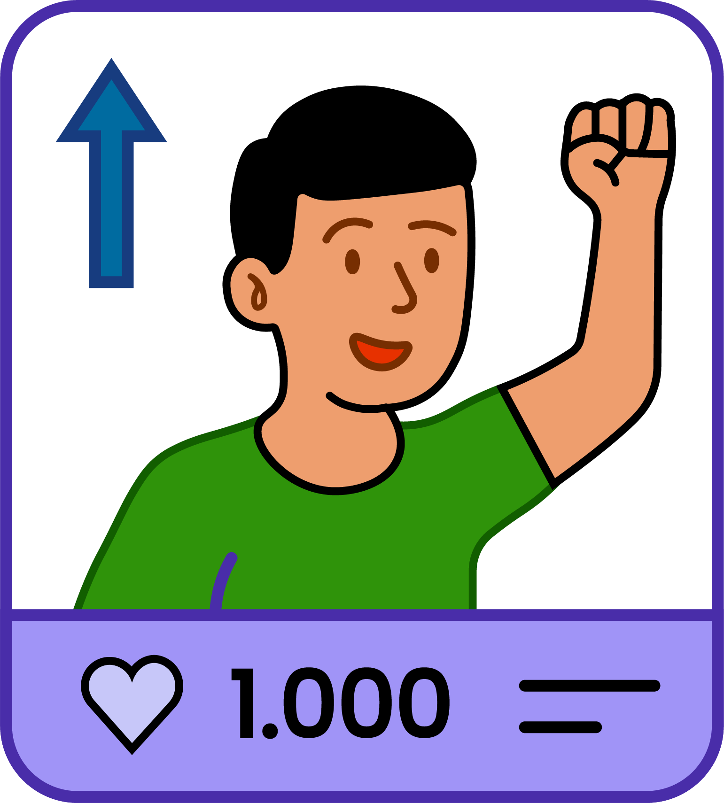
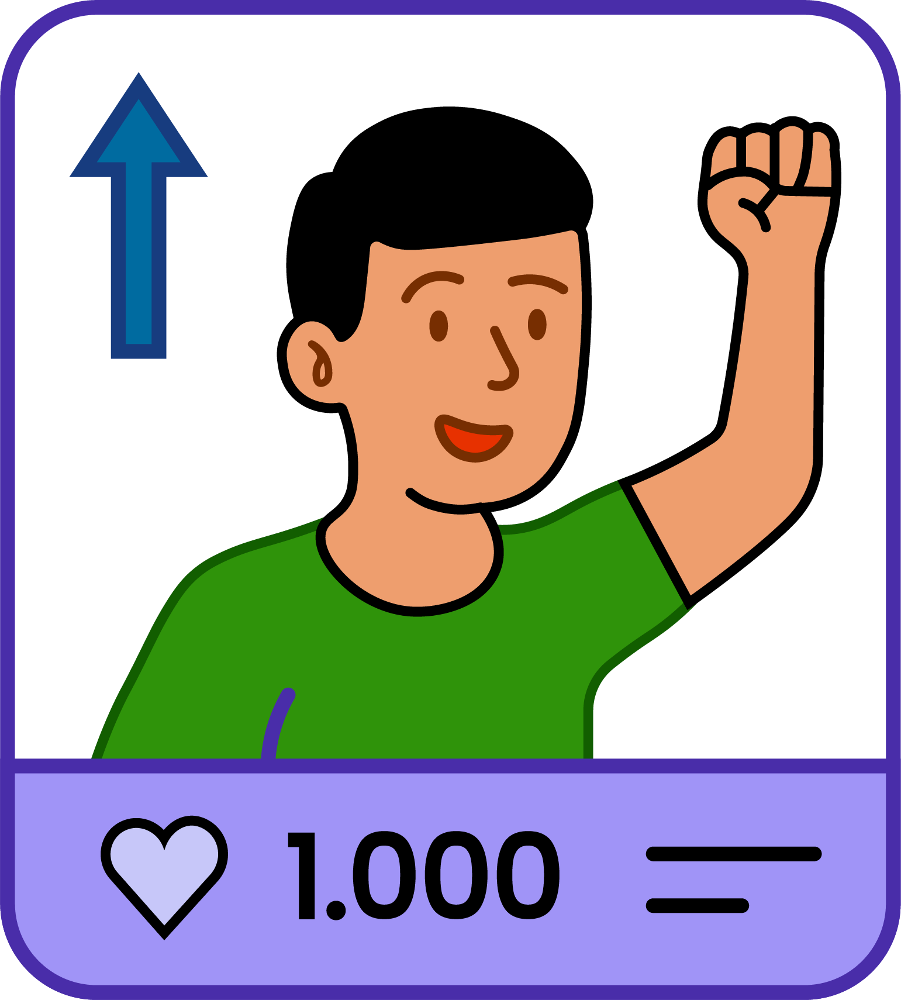

QUARTER
LIFE
CRISIS


QUARTER
LIFE
CRISIS
QUARTER LIFE CRISIS
Pernah ngga sih kamu ngerasa...
hidup kayak jalan ditempat?
Sebuah fase kehidupan

Fase kehidupan yang membuat kamu merasa kehilangan arah, bukan tersesat
Fase ini sering dialami oleh individu usia 20-an hingga awal 30-an
75%
Anak muda pernah mengalami fase
Quarter Life Crisis
Bingung arah tujuan hidup
Semua pilihan hidup rasanya membingungkan. Kamu membayangkan masa depan yang kamu miliki tampaknya samar.
Ini bisa jadi tanda kalau kamu sedang mengalami krisis identitas
bingung dengan diri sendiri
Kamu bimbang dengan apa yang sebenarnya kamu mau.
Hal ini biasa terjadi pada masa dewasa awal, saat seseorang sedang membentuk identitas diri
Merasa hidup stuck atau jalan di tempat
Kamu merasa apa yang sudah kamu usahakan tidak membuahkan hasil apapun, padahal kamu sudah berusaha lebih keras.
Ini bisa jadi tanda mental fatigue akibat tekanan pada dirimu secara terus-menerus
sulit membuat keputusan
Kamu takut melangkah tapi juga enggak bahagia di posisi sekarang.
Hal ini disebut sebagai Decision Paralysis
kegiatan atau hubungan terasa hampa
Rutinitas dan hubungan yang kamu jalanin rasanya kosong. Enggak lagi kasih kamu semangat jalaninnya.

Hilangnya rasa antusias
Hal-hal kecil yang dulu rasanya menyenangkan untuk kamu sekarang rasanya hambar.
Ini bisa jadi sinyal kalau kamu lagi kehilangan Spark dalam hidupmu
sering merasa cemas
Kamu menjalani hari-hari seperti biasa, namun pikiran kamu enggak biasa. Kamu terus merasa gelisah tanpa tau alasannya.
Ini bisa jadi tanda Overthinking atau awal Burnout.
 

suka membandingkan diri dengan orang lain
Melihat temanmu sukses, bikin kamu merasa tertinggal. Semakin explore media sosial dapat memperburuk perasaan kamu.
Merasa kesepian meskipun punya teman
Ada orang di sekitar kamu atau bahkan lebih ramai orang, tapi kamu tetap merasa sendiri.
Hal ini mungkin terjadi karena koneksi emosional dirimu dengan orang sekitar kamu yang belum kuat.